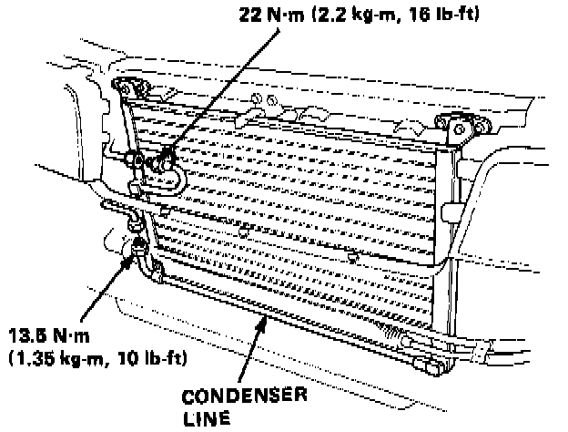
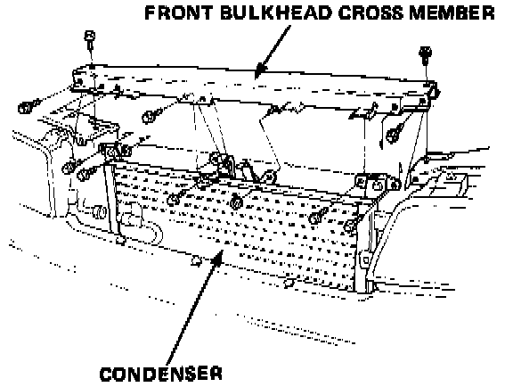
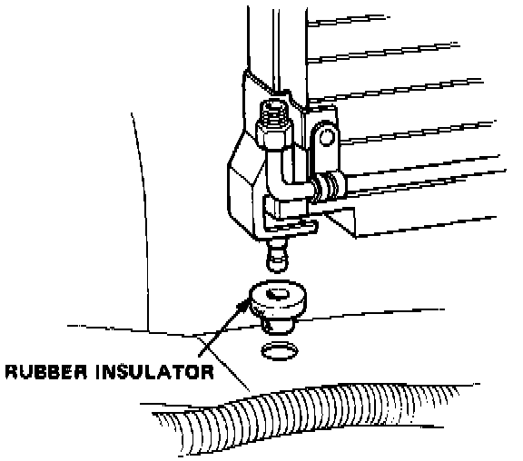
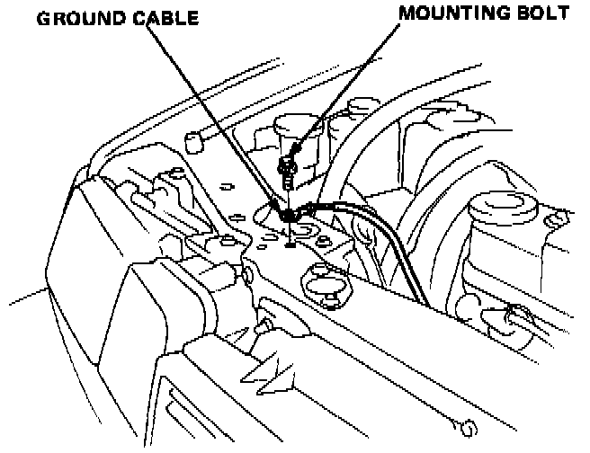

Condenser HVAC: Service and Repair
Condenser Replacement1. Disconnect the battery negative terminal.
2. Recover the refrigerant.
3. Remove the front grille.

4. Disconnect the condenser line and discharge line from the condenser.
CAUTION: Cap the open fittings immediately to keep moisture and dirt out of system.
5. Remove the condenser mount bolts (4).

6. Remove the front bulkhead cross member (6 bolts, and nut), then the condenser up from the car.

7. Install in the reverse order of removal and:
- Push the two rubber insulators onto the lower condenser mounts, then set the condenser in place in front of the radiator.

- When installing the front bulkhead, secure the ground cable to the front bulkhead with a mounting bolt.
8. Charge the system and test performance.